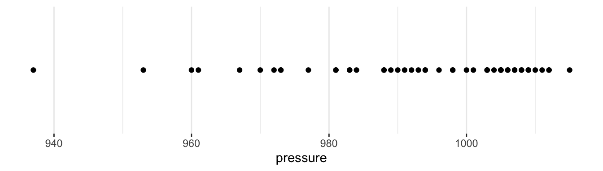
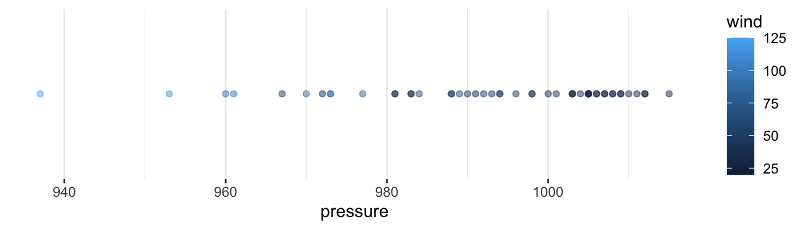
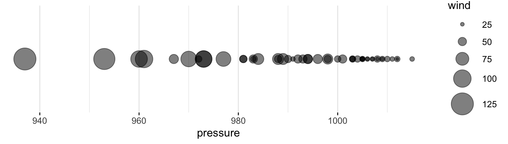
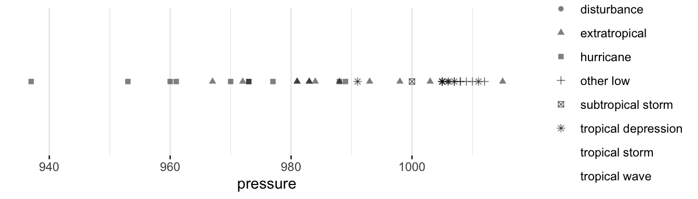
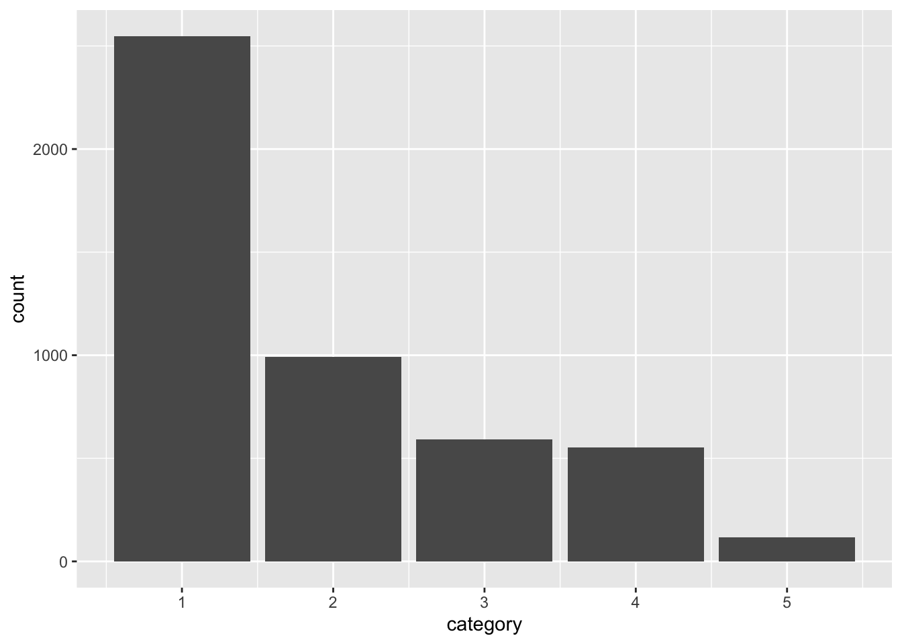
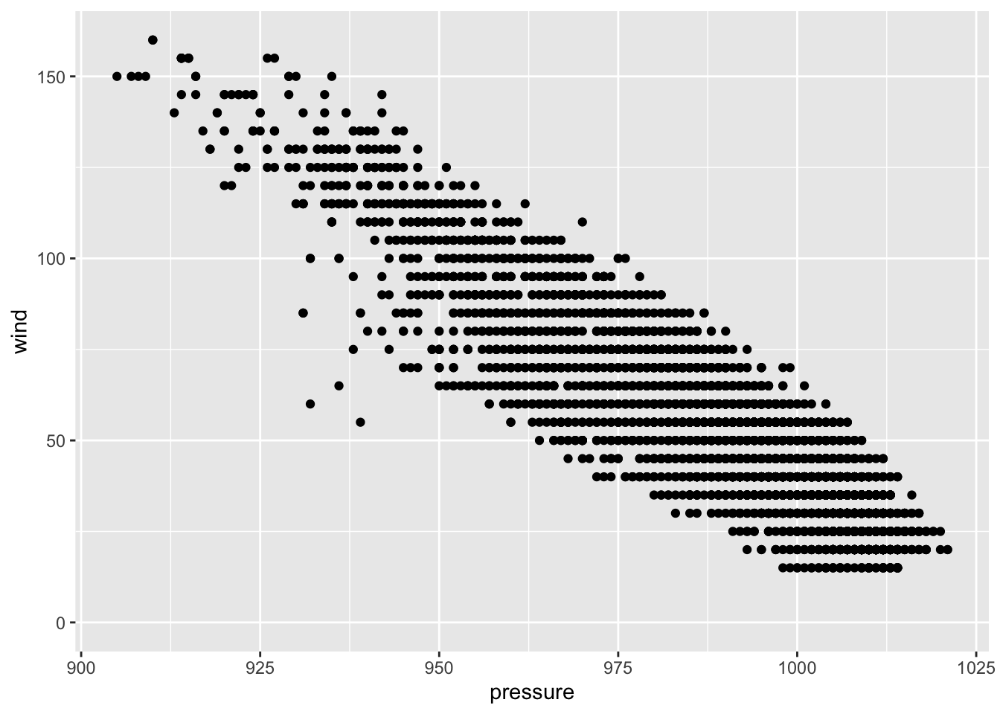
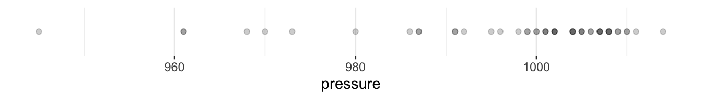
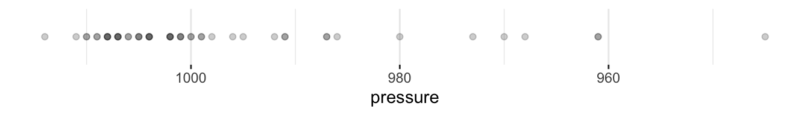
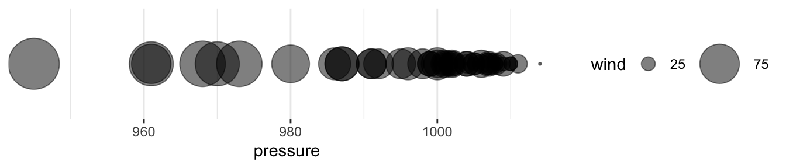

| name | year | category | lat | long | wind | pressure |
|---|---|---|---|---|---|---|
| Chris | 2018 | NA | 32.6 | -74.6 | 45 | 1005 |
| Edouard | 2014 | NA | 23.0 | -47.9 | 55 | 994 |
| Edouard | 1990 | NA | 38.5 | -19.3 | 30 | 1010 |
| Chantal | 2013 | NA | 16.7 | -71.2 | 40 | 1011 |
| Cristobal | 2020 | NA | 53.2 | -80.4 | 35 | 987 |
| Humberto | 2001 | 1 | 42.2 | -54.6 | 70 | 987 |
| Gaston | 2016 | 2 | 32.0 | -53.5 | 85 | 968 |
| AL042000 | 2000 | NA | 28.3 | -79.3 | 30 | 1010 |
| Alicia | 1983 | NA | 40.0 | -98.0 | 20 | 1010 |
| Michael | 2012 | NA | 26.7 | -43.5 | 40 | 1007 |
4 Data Visualization with ggplot2
5 Motivation
- Data visualization is exploratory data analysis (EDA)
- Data visualization is diagnosis and validation
- Data visualization is communication
6 Motivation (going beyond Excel)
- Flexibility
- Reproducibility
- Scalability
- Relational data vs. positional data
7 Background
- The toughest part of data visualization is data munging.
- Data frames are the only appropriate input for
library(ggplot2).
ggplot2 is an R package for data visualization that was developed during Hadley Wickham’s graduate studies at Iowa State University. ggplot2 is formalized in “A Layered Grammar of Graphics” by Hadley Wickham, which was published in the Journal of Statistical Software in 2010.
The grammar of graphics, originally by Leland Wilkinson, is a theoretical framework that breaks all data visualizations into their component pieces. With the layered grammar of graphics, Wickham extends Wilkinson’s grammar of graphics and implements it in R. The cohesion is impressive and the theory flows to the code which informs the data visualization process in a way not reflected in any other data viz tool.
There are eight main ingredients to the grammar of graphics. We will work our way through the ingredients with many hands-on examples.
7.0.1 Exercise 0
Step 1: Open your .Rproj.
Step 2: Create a new .R script in your directory called 03_data-visualization.R.
7.0.2 Exercise 1
Step 1: Type (don’t copy & paste) the following code below library(tidyverse) in 03_data-visualization.R.
ggplot(data = storms) +
geom_point(mapping = aes(x = pressure, y = wind))Step 2: Add a comment above the ggplot2 code that describes the plot we created.
Note
1 Data are the values represented in the visualization.
ggplot(data = ) or data %>% ggplot()
Note
2 Aesthetic mappings are directions for how data are mapped in a plot in a way that we can perceive. Aesthetic mappings include linking variables to the x-position, y-position, color, fill, shape, transparency, and size.
aes(x = , y = , color = )
X or Y

Continuous Color or Fill

Discrete Color or Fill

Size

Shape
Warning: The shape palette can deal with a maximum of 6 discrete values because more
than 6 becomes difficult to discriminate
ℹ you have requested 7 values. Consider specifying shapes manually if you need
that many have them.Warning: Removed 18 rows containing missing values or values outside the scale range
(`geom_point()`).
Others: transparency, line type
Note
3 Geometric objects are representations of the data, including points, lines, and polygons.
geom_bar() or geom_col()
Plots are often called their geometric object(s).
Warning: Removed 42 rows containing non-finite outside the scale range
(`stat_count()`).
geom_line()
Warning: Removed 2 rows containing missing values or values outside the scale range
(`geom_line()`).
geom_point()

7.0.3 Exercise 2
Step 1: Duplicate the code from exercise 1. Add comments below the data visualization code that describes the argument or function that corresponds to each of the first three components of the grammar of graphics.
Step 2: Inside aes(), add color = category. Run the code.
Step 3: Replace color = category with color = "green". Run the code. What changed? Is this unexpected?
Step 4: Remove color = "green" from aes() and add it inside inside of geom_point() but outside of aes(). Run the code.
Step 5: This is a little cluttered. Add alpha = 0.2 inside geom_point() but outside of aes().
Aesthetic mappings like x and y almost always vary with the data. Aesthetic mappings like color, fill, shape, transparency, and size can vary with the data. But those arguments can also be added as styles that don’t vary with the data. If you include those arguments in aes(), they will show up in the legend (which can be annoying! and is also a sign that something should be changed!).
7.0.4 Exercise 3
Step 1: Create a new scatter plot using the msleep data set. Use bodywt on the x-axis and sleep_total on the y-axis.
Step 2: The y-axis doesn’t contain zero. Below geom_point(), add scale_y_continuous(limits = c(0, NA)). Hint: add + after geom_point().
Step 3: The x-axis is clustered near zero. Add scale_x_log10() above scale_y_continuous(limits = c(0, NA)).
Note
4 Scales turn data values, which are continuous, discrete, or categorical into aesthetic values. scale_*_*() functions control the specific behaviors of aesthetic mappings. This includes not only the x-axis and y-axis, but the ranges of sizes, types of shapes, and specific colors of aesthetics.
Before
scale_x_continuous()

After
scale_x_reverse()

Before
scale_size_continuous(breaks = c(25, 75, 125))

After
scale_size_continuous(range = c(0.5, 20), breaks = c(25, 75, 125))

7.0.5 Exercise 4
Step 1: Type the following code in your script.
data <- tibble(x = 1:10, y = 1:10)
ggplot(data = data) +
geom_blank(mapping = aes(x = x, y = y))Step 2: Add coord_polar() to your plot.
Step 3: Add labs(title = "Polar coordinate system") to your plot.
Note
5 Coordinate systems map scaled geometric objects to the position of objects on the plane of a plot. The two most popular coordinate systems are the Cartesian coordinate system and the polar coordinate system.

coord_polar()

7.0.6 Exercise 5
Step 1: Create a scatter plot of the storms data set with pressure on the x-axis and wind on the y-axis.
Step 2: Add facet_wrap(~ category)
Note
6 Facets (optional) break data into meaningful subsets. facet_wrap(), facet_grid(), and facet_geo().
7.0.7 Facet wrap
facet_wrap(~ category)
7.0.8 Facet grid
facet_grid(month ~ year)

7.0.9 Exercise 6
Step 1: Add the following code to your script. Submit it!
ggplot(storms) +
geom_bar(mapping = aes(x = category))
Note
7 Statistical transformations (optional) transform the data, typically through summary statistics and functions, before aesthetic mapping.
Before transformations, each observation in data is represented by one geometric object (i.e. a scatter plot). After a transformation, a geometric object can represent more than one observation (i.e. a bar in a histogram).
Note: geom_bar() performs statistical transformation. Use geom_col() to create a column chart with bars that encode individual observations in the data set.
7.0.10 Exercise 7
Step 1: Duplicate Exercise 6.
Step 2: Add theme_minimal() to the plot.
7.0.11 Exercise 8
Step 1: Duplicate Exercise 6.
Step 2: Run install.packages("remotes") and remotes::install_github("UrbanInstitute/urbnthemes") in the console.
Step 3: In the lines preceding the chart add and run the following code:
library(urbnthemes)
set_urbn_defaults(style = "print")Step 4: Run the code to make the chart.
Step 5: Add scale_y_continuous(expand = expansion(mult = c(0, 0.1))) and rerun the code.
Note
8 Themes control the visual style of plots with font types, font sizes, background colors, margins, and positioning.
7.0.12 Default theme
7.0.13 fivethirtyeight theme

7.0.14 urbnthemes
7.0.15 Exercise 9 (layers!)
Step 1: Add the following exercise to you script. Run it!
storms %>%
filter(category > 0) %>%
distinct(name, year) %>%
count(year) %>%
ggplot() +
geom_line(mapping = aes(x = year, y = n))Step 2: Add geom_point() after geom_line() with the same aesthetic mappings.
Note
Layers allow for multiple geometric objects to be plotted in the same data visualization.
7.0.16 Exercise 10
Step 1: Add the following exercise to you script. Run it!
ggplot(data = storms, mapping = aes(x = pressure, y = wind)) +
geom_point() +
geom_smooth()
Note
Inheritances pass aesthetic mappings from ggplot() to later geom_*() functions.
ggplot()
7.0.17 Exercise 11
Step 1: Pick your favorite plot from exercises 1 through 10 and duplicate the code.
Step 2: Add ggsave(filename = "favorite-plot.png") on a new line without + and then save the file. Look at the saved file.
Step 3: Add width = 6 and height = 4 to ggsave(). Run the code and then look at the saved file.
8 Functions
ggplot()aes()geom_*()geom_point()geom_line()geom_col()
scale_*()scale_y_continuous()
coord_*()facet_*()labs()
9 Theory
- Data
- Aesthetic mappings
- Geometric objects
- Scales
- Coordinate systems
- Facets
- Statistical transformations
- Theme